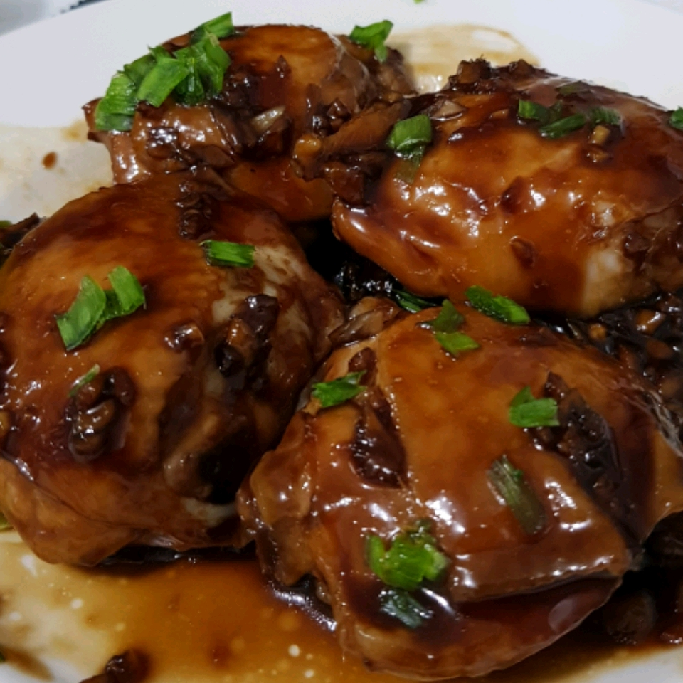

Soy-Sauce Chicken

A delicious, fast, and easy recipe for any week night dinner. The
chicken comes out flavorful with a sweet and tangy glaze. Serve with
rice and steamed snow peas for a complete meal.
Ingredients
- 1 cup white sugar
- 1 cup soy sauce
- 1 cup water
- ¼ cup minced garlic
- ¼ cup minced fresh ginger
- 5 pounds bone-in chicken thighs with skin
- ¼ cup chopped green onions
Steps
-
Combine sugar, soy sauce, water, garlic, and ginger in a large
stock pot; stir until sugar is dissolved. Place chicken in stock
pot and bring to a boil. Using tongs, turn chicken in pot every
5 minutes.
-
Boil chicken until no longer pink at the bone and juices run
clear, about 35 minutes. An instant-read thermometer inserted
near the bone should read 165 degrees F (74 degrees C). Sauce
mixture will turn into a rich, brown glaze. Remove pot from heat
and let cool 10 minutes.
-
Place chicken on a platter and sprinkle with chopped green
onions.
Return to main page